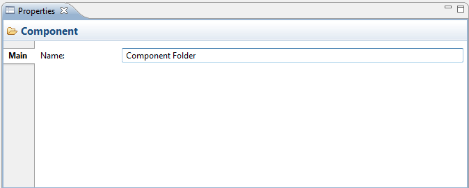

Selecting a user-created folder in the Model Tree means that you can edit or view the following properties in the Properties Window.
The Main Tab
| Name: | The name of the Folder - this can only be edited for user-created sub-folders. |

Editing the "Main" Properties for a Folder